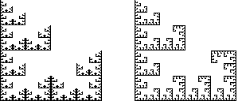

Purpose To find IFS that generate given fractal images
Materials IFS software (for example, IFS Random for PCs, TreenessEmerging for Macs, or RandomIFS over the web with Internet Explorer), directions sheet, fractal image sheet, small pieces of lightweight paper, (optional) a program (for example, Paint) to manipulate images.
Conclusion Finding IFS rules for fractals is very good practice for working with scaling, reflection, rotation, and translation. Some of the more complex diagrams are difficult to see, especially when combinations of reflections and rotations are involved. Scalings of different values in the same diagram also present challenges to finding rules. Aids such as the paper copies and using software can help, but be careful about where the copies end up after reflecting or rotating. Mistakes here can cause mistakes in translation.
Notice that there is very little difference between the rules for the two sample examples. Often a small change in the rules can produce very different images. This can make for some interesting experimentation but be careful, not any set of rules can be used. For these exercises the final image must be within the unit square and many sets of rules will take the image outside this area.
Exercise Find IFS rules for the fractals on the Fractal Image Sheet.